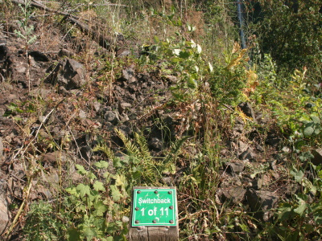
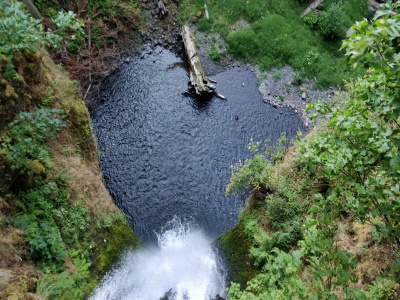

The road trip had started. We were leaving the midwest and were traveling as far west as the land
would take us. What else would a group of college students do? We wanted to travel, but plane tickets
weren't an option. We all piled into a minivan with a week's worth of clothes, some tents, and as much
food as we could scavenge. The journey began.
Long Car Rides and Short Hours

One of our first stops along the way was Multnomah Falls. It was very touristy, but turned into a
beautiful little stop with a cafe, gift shop, and cafe. The trails were easy to walk along and were
pretty well maintained. With how steep it was, I'm glad we had the switchbacks.
It was a long walk but well worth it. I think technically it's only a mile walk, but it's a steep mile.
Not to mention with the elevation change the air gets a lot thinner. Living in the midwest that's not
something we ever really have to deal with. There were many stops made along the way just to catch our breath.
Only 10,000 Steps is Weak
It wasn't the first waterfall I had seen in my life, I had been in the mountains before. It could
have just been the fact that I hadn't seen a waterfall in so long, but I absolutely loved it. Just
something about a waterfall has always captivated me. The sound of a river, combined with the beauty
of the mist as the water comes crashing down, nothing in nature can match it.

Although it was turned into a tourist daydream, the falls were still beautiful to see. Whoever had
built the stop, had taken great care to make sure that all of the buildings didn't
detract from the beauty of the scene which people were there to see. The bridge made for a nice photoshoot,
but many things were kept as natural as possible. The buildings were meant to be an afterthought, not
the main attraction.

The view from the top of the waterfall. My only wish is that a camera could capture what you see. No
matter what angle I tried, not a single picture could represent the distance to the shallow pool
awaiting at the bottom. What looks like a short drop in the picture was actually over 600 feet down.
Like I said a picture doesn't do it justice at all.
Freefallin (If You Jumped)